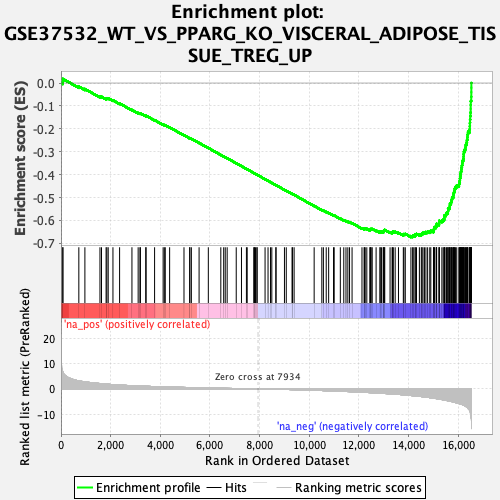

| | | Dataset | DE_genes2 |
| Phenotype | NoPhenotypeAvailable |
| Upregulated in class | na_neg |
| GeneSet | GSE37532_WT_VS_PPARG_KO_VISCERAL_ADIPOSE_TISSUE_TREG_UP |
| Enrichment Score (ES) | -0.67251694 |
| Normalized Enrichment Score (NES) | -2.2642524 |
| Nominal p-value | 0.0 |
| FDR q-value | 0.0 |
| FWER p-Value | 0.0 |
Table: GSEA Results Summary

Fig 1: Enrichment plot: GSE37532_WT_VS_PPARG_KO_VISCERAL_ADIPOSE_TISSUE_TREG_UP
Profile of the Running ES Score & Positions of GeneSet Members on the Rank Ordered List
| PROBE | GENE SYMBOL | GENE_TITLE | RANK IN GENE LIST | RANK METRIC SCORE | RUNNING ES | CORE ENRICHMENT | | 1 | CARHSP1 | | | 71 | 6.810 | 0.0072 | No |
| 2 | DCTN2 | | | 78 | 6.594 | 0.0179 | No |
| 3 | ZDHHC14 | | | 718 | 3.167 | -0.0158 | No |
| 4 | EZR | | | 962 | 2.778 | -0.0260 | No |
| 5 | SAP130 | | | 1569 | 2.115 | -0.0595 | No |
| 6 | CYTH2 | | | 1631 | 2.059 | -0.0597 | No |
| 7 | ILK | | | 1816 | 1.906 | -0.0677 | No |
| 8 | TMEM129 | | | 1848 | 1.879 | -0.0665 | No |
| 9 | RANGAP1 | | | 1901 | 1.838 | -0.0665 | No |
| 10 | DGKZ | | | 2092 | 1.688 | -0.0753 | No |
| 11 | TCF3 | | | 2360 | 1.518 | -0.0891 | No |
| 12 | PAPSS1 | | | 2857 | 1.262 | -0.1173 | No |
| 13 | SLC25A20 | | | 3107 | 1.152 | -0.1306 | No |
| 14 | BACH2 | | | 3179 | 1.120 | -0.1330 | No |
| 15 | TRIOBP | | | 3198 | 1.111 | -0.1322 | No |
| 16 | PTP4A2 | | | 3413 | 1.033 | -0.1436 | No |
| 17 | WDR66 | | | 3427 | 1.029 | -0.1426 | No |
| 18 | RTTN | | | 3769 | 0.905 | -0.1620 | No |
| 19 | TDRD7 | | | 4113 | 0.805 | -0.1816 | No |
| 20 | TAPT1-AS1 | | | 4161 | 0.790 | -0.1831 | No |
| 21 | DCTN3 | | | 4199 | 0.779 | -0.1841 | No |
| 22 | GCSAM | | | 4375 | 0.728 | -0.1935 | No |
| 23 | CPPED1 | | | 4953 | 0.581 | -0.2278 | No |
| 24 | RPRD2 | | | 5185 | 0.523 | -0.2411 | No |
| 25 | C6orf226 | | | 5187 | 0.522 | -0.2403 | No |
| 26 | ACKR4 | | | 5250 | 0.506 | -0.2432 | No |
| 27 | RNF26 | | | 5561 | 0.436 | -0.2614 | No |
| 28 | TUBB4B | | | 5933 | 0.359 | -0.2835 | No |
| 29 | HPS4 | | | 6436 | 0.257 | -0.3138 | No |
| 30 | IFT122 | | | 6552 | 0.233 | -0.3204 | No |
| 31 | HDGF | | | 6614 | 0.220 | -0.3238 | No |
| 32 | CALM3 | | | 6692 | 0.204 | -0.3281 | No |
| 33 | STMN1 | | | 7057 | 0.145 | -0.3502 | No |
| 34 | CLIC4 | | | 7268 | 0.103 | -0.3628 | No |
| 35 | NAP1L4 | | | 7467 | 0.071 | -0.3748 | No |
| 36 | PRDM10 | | | 7498 | 0.065 | -0.3765 | No |
| 37 | GPR137C | | | 7767 | 0.022 | -0.3929 | No |
| 38 | HSPA2 | | | 7779 | 0.021 | -0.3935 | No |
| 39 | SPA17 | | | 7795 | 0.018 | -0.3944 | No |
| 40 | CDK19 | | | 7832 | 0.012 | -0.3966 | No |
| 41 | SLC30A4 | | | 7890 | 0.005 | -0.4001 | No |
| 42 | PPP6C | | | 7898 | 0.005 | -0.4005 | No |
| 43 | YWHAZ | | | 8218 | -0.045 | -0.4199 | No |
| 44 | NT5C2 | | | 8338 | -0.064 | -0.4271 | No |
| 45 | TUBA1C | | | 8438 | -0.083 | -0.4330 | No |
| 46 | ARHGAP33 | | | 8490 | -0.091 | -0.4360 | No |
| 47 | POLH | | | 8653 | -0.120 | -0.4457 | No |
| 48 | TUG1 | | | 8660 | -0.122 | -0.4458 | No |
| 49 | WDR47 | | | 8999 | -0.192 | -0.4662 | No |
| 50 | RALBP1 | | | 9072 | -0.207 | -0.4702 | No |
| 51 | ACRBP | | | 9305 | -0.266 | -0.4840 | No |
| 52 | MPC2 | | | 9325 | -0.270 | -0.4847 | No |
| 53 | TAPT1 | | | 9388 | -0.286 | -0.4880 | No |
| 54 | SPAG16 | | | 10195 | -0.524 | -0.5364 | No |
| 55 | POC1A | | | 10504 | -0.626 | -0.5542 | No |
| 56 | UBL7-AS1 | | | 10567 | -0.650 | -0.5569 | No |
| 57 | MXD3 | | | 10681 | -0.686 | -0.5626 | No |
| 58 | MRPL51 | | | 10779 | -0.718 | -0.5673 | No |
| 59 | TERF2 | | | 10975 | -0.790 | -0.5779 | No |
| 60 | SEPHS1 | | | 11002 | -0.803 | -0.5782 | No |
| 61 | SARNP | | | 11249 | -0.901 | -0.5917 | No |
| 62 | PAPOLG | | | 11388 | -0.964 | -0.5985 | No |
| 63 | ITPR1 | | | 11477 | -0.998 | -0.6022 | No |
| 64 | PTTG3P | | | 11552 | -1.029 | -0.6050 | No |
| 65 | KIAA1841 | | | 11620 | -1.054 | -0.6073 | No |
| 66 | ANAPC11 | | | 11722 | -1.095 | -0.6116 | No |
| 67 | LRRFIP2 | | | 12121 | -1.283 | -0.6338 | No |
| 68 | STIL | | | 12207 | -1.330 | -0.6368 | No |
| 69 | MTM1 | | | 12221 | -1.336 | -0.6353 | No |
| 70 | CDKN2C | | | 12251 | -1.351 | -0.6348 | No |
| 71 | LSM3 | | | 12316 | -1.382 | -0.6364 | No |
| 72 | DTYMK | | | 12442 | -1.447 | -0.6416 | No |
| 73 | RPS27L | | | 12454 | -1.452 | -0.6398 | No |
| 74 | HAUS8 | | | 12459 | -1.454 | -0.6376 | No |
| 75 | ANKRD36 | | | 12491 | -1.472 | -0.6370 | No |
| 76 | E2F2 | | | 12533 | -1.492 | -0.6370 | No |
| 77 | CCNE1 | | | 12690 | -1.585 | -0.6438 | No |
| 78 | MME | | | 12848 | -1.686 | -0.6506 | No |
| 79 | MFHAS1 | | | 12852 | -1.690 | -0.6479 | No |
| 80 | SYF2 | | | 12905 | -1.720 | -0.6482 | No |
| 81 | CTCF | | | 12974 | -1.752 | -0.6494 | No |
| 82 | RAP1B | | | 12997 | -1.768 | -0.6478 | No |
| 83 | TRIM24 | | | 13000 | -1.769 | -0.6449 | No |
| 84 | CEP76 | | | 13017 | -1.780 | -0.6429 | No |
| 85 | RRM1 | | | 13038 | -1.791 | -0.6411 | No |
| 86 | IQGAP1 | | | 13252 | -1.926 | -0.6508 | No |
| 87 | SAE1 | | | 13334 | -1.977 | -0.6525 | No |
| 88 | HMGB3 | | | 13350 | -1.994 | -0.6500 | No |
| 89 | HCFC2 | | | 13384 | -2.017 | -0.6486 | No |
| 90 | PHKB | | | 13458 | -2.072 | -0.6496 | No |
| 91 | SPIN4 | | | 13591 | -2.158 | -0.6540 | No |
| 92 | SAPCD2 | | | 13786 | -2.319 | -0.6620 | No |
| 93 | DPY30 | | | 13810 | -2.337 | -0.6594 | No |
| 94 | CKS1B | | | 13865 | -2.382 | -0.6587 | No |
| 95 | CCNF | | | 14092 | -2.590 | -0.6681 | Yes |
| 96 | TYMS | | | 14161 | -2.652 | -0.6678 | Yes |
| 97 | WDR19 | | | 14185 | -2.682 | -0.6647 | Yes |
| 98 | ESPL1 | | | 14262 | -2.749 | -0.6647 | Yes |
| 99 | DESI2 | | | 14263 | -2.750 | -0.6601 | Yes |
| 100 | KPNA2 | | | 14317 | -2.796 | -0.6586 | Yes |
| 101 | DUT | | | 14433 | -2.919 | -0.6607 | Yes |
| 102 | DCP2 | | | 14510 | -2.993 | -0.6603 | Yes |
| 103 | ZCCHC10 | | | 14537 | -3.034 | -0.6567 | Yes |
| 104 | JMJD1C | | | 14578 | -3.081 | -0.6540 | Yes |
| 105 | CDC27 | | | 14637 | -3.170 | -0.6522 | Yes |
| 106 | UBE2T | | | 14697 | -3.240 | -0.6503 | Yes |
| 107 | PEX5 | | | 14765 | -3.320 | -0.6488 | Yes |
| 108 | TPD52 | | | 14851 | -3.426 | -0.6482 | Yes |
| 109 | SLBP | | | 14893 | -3.498 | -0.6448 | Yes |
| 110 | RRM2B | | | 15001 | -3.653 | -0.6452 | Yes |
| 111 | HNRNPM | | | 15007 | -3.659 | -0.6393 | Yes |
| 112 | PLK4 | | | 15029 | -3.687 | -0.6344 | Yes |
| 113 | TACC3 | | | 15038 | -3.698 | -0.6286 | Yes |
| 114 | DONSON | | | 15105 | -3.791 | -0.6263 | Yes |
| 115 | CENPI | | | 15122 | -3.810 | -0.6208 | Yes |
| 116 | HMGN2 | | | 15128 | -3.819 | -0.6147 | Yes |
| 117 | CDCA8 | | | 15225 | -3.955 | -0.6139 | Yes |
| 118 | CCDC34 | | | 15229 | -3.961 | -0.6074 | Yes |
| 119 | CDC25B | | | 15237 | -3.978 | -0.6011 | Yes |
| 120 | SPAG5 | | | 15339 | -4.181 | -0.6002 | Yes |
| 121 | CDCA5 | | | 15393 | -4.273 | -0.5962 | Yes |
| 122 | RAD54L | | | 15435 | -4.365 | -0.5913 | Yes |
| 123 | CBX5 | | | 15439 | -4.369 | -0.5841 | Yes |
| 124 | FOPNL | | | 15444 | -4.378 | -0.5770 | Yes |
| 125 | TCEA1 | | | 15502 | -4.486 | -0.5729 | Yes |
| 126 | TRIP13 | | | 15527 | -4.544 | -0.5667 | Yes |
| 127 | HP1BP3 | | | 15579 | -4.656 | -0.5620 | Yes |
| 128 | FANCI | | | 15588 | -4.678 | -0.5545 | Yes |
| 129 | TRMT5 | | | 15589 | -4.679 | -0.5466 | Yes |
| 130 | CDC25C | | | 15648 | -4.802 | -0.5421 | Yes |
| 131 | OIP5 | | | 15659 | -4.836 | -0.5345 | Yes |
| 132 | EME1 | | | 15663 | -4.840 | -0.5265 | Yes |
| 133 | SRP9 | | | 15707 | -4.922 | -0.5209 | Yes |
| 134 | HNRNPA2B1 | | | 15720 | -4.948 | -0.5132 | Yes |
| 135 | BIRC5 | | | 15741 | -4.998 | -0.5060 | Yes |
| 136 | CTNNAL1 | | | 15758 | -5.029 | -0.4985 | Yes |
| 137 | C18orf54 | | | 15803 | -5.136 | -0.4925 | Yes |
| 138 | RFC4 | | | 15807 | -5.149 | -0.4840 | Yes |
| 139 | TROAP | | | 15823 | -5.203 | -0.4761 | Yes |
| 140 | CENPJ | | | 15846 | -5.253 | -0.4686 | Yes |
| 141 | TPX2 | | | 15859 | -5.288 | -0.4604 | Yes |
| 142 | PNRC2 | | | 15890 | -5.375 | -0.4532 | Yes |
| 143 | MLLT10 | | | 15937 | -5.474 | -0.4468 | Yes |
| 144 | GTSE1 | | | 16026 | -5.744 | -0.4424 | Yes |
| 145 | CETN3 | | | 16040 | -5.798 | -0.4334 | Yes |
| 146 | KIF2C | | | 16061 | -5.848 | -0.4248 | Yes |
| 147 | TMPO | | | 16067 | -5.864 | -0.4152 | Yes |
| 148 | ECT2 | | | 16082 | -5.906 | -0.4061 | Yes |
| 149 | CGGBP1 | | | 16089 | -5.925 | -0.3964 | Yes |
| 150 | PRC1 | | | 16103 | -5.960 | -0.3872 | Yes |
| 151 | CDC7 | | | 16121 | -6.016 | -0.3780 | Yes |
| 152 | MELK | | | 16129 | -6.045 | -0.3683 | Yes |
| 153 | SKA1 | | | 16146 | -6.104 | -0.3589 | Yes |
| 154 | DIAPH3 | | | 16163 | -6.183 | -0.3495 | Yes |
| 155 | FBXO5 | | | 16169 | -6.210 | -0.3393 | Yes |
| 156 | GPSM2 | | | 16202 | -6.325 | -0.3306 | Yes |
| 157 | GINS2 | | | 16213 | -6.392 | -0.3204 | Yes |
| 158 | PHF3 | | | 16217 | -6.419 | -0.3097 | Yes |
| 159 | KIF4A | | | 16226 | -6.459 | -0.2993 | Yes |
| 160 | PKMYT1 | | | 16257 | -6.586 | -0.2900 | Yes |
| 161 | CPSF6 | | | 16289 | -6.822 | -0.2804 | Yes |
| 162 | CCDC150 | | | 16301 | -6.866 | -0.2695 | Yes |
| 163 | IQGAP3 | | | 16332 | -7.059 | -0.2594 | Yes |
| 164 | PSIP1 | | | 16348 | -7.206 | -0.2481 | Yes |
| 165 | ZNF367 | | | 16367 | -7.350 | -0.2368 | Yes |
| 166 | NUSAP1 | | | 16374 | -7.420 | -0.2247 | Yes |
| 167 | TRIM59 | | | 16391 | -7.615 | -0.2128 | Yes |
| 168 | FAM111B | | | 16454 | -8.389 | -0.2024 | Yes |
| 169 | CDKN3 | | | 16463 | -8.532 | -0.1885 | Yes |
| 170 | ARHGAP11A | | | 16467 | -8.620 | -0.1741 | Yes |
| 171 | DEPDC1B | | | 16474 | -8.791 | -0.1596 | Yes |
| 172 | DLGAP5 | | | 16482 | -9.145 | -0.1446 | Yes |
| 173 | DEK | | | 16492 | -9.678 | -0.1288 | Yes |
| 174 | KIF18A | | | 16499 | -9.952 | -0.1124 | Yes |
| 175 | ARHGAP19 | | | 16500 | -9.994 | -0.0955 | Yes |
| 176 | KIF14 | | | 16503 | -10.060 | -0.0786 | Yes |
| 177 | DEPDC1 | | | 16522 | -11.603 | -0.0602 | Yes |
| 178 | HMGB2 | | | 16525 | -11.801 | -0.0403 | Yes |
| 179 | CKAP2L | | | 16526 | -11.804 | -0.0204 | Yes |
| 180 | NDC80 | | | 16527 | -12.233 | 0.0002 | Yes |
Table: GSEA details [plain text format]
Fig 2: GSE37532_WT_VS_PPARG_KO_VISCERAL_ADIPOSE_TISSUE_TREG_UP: Random ES distribution
Gene set null distribution of ES for GSE37532_WT_VS_PPARG_KO_VISCERAL_ADIPOSE_TISSUE_TREG_UP